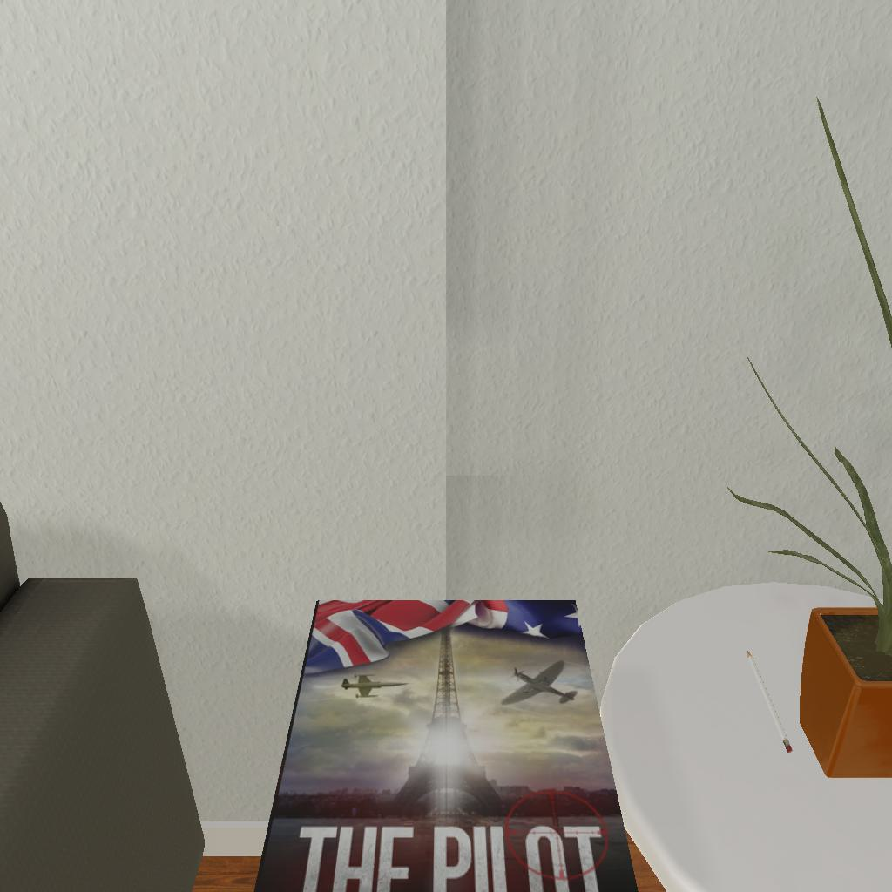

---------------------------------------------------------task: 5---------------------------------------------------------
--------------------------------------------------------------------------------------------------------------------------------------------------------------------
--------------------------------------------------------------------------------------------------------------------------------------------------------------------
Step:--------------------------------------------------------------------------14-------------------------------------------------------------------------------
----------------------------------------
VLM Prompt:
Image1:
**Instruction**
1. Analyze the provided image to identify all visible household objects, focusing on those relevant to the task description "put a book in armchair."
2. Use the analysis of the image and the task hint "The agent must find an object of the desired type, pick it up, find the correct location to place it, and put it down there." to answer the question: what is the most reasonable action in the choices for the task description "put a book in armchair"?
4. Decide and write the answer using the template: The answer is: (i): , where i is the real number. If there is no desired object in the image, search every place based on **Initial Observation** to find the object. And if no one is exactly correct, choose a similar answer.
**Initial Observation**
You are in the middle of a room. Looking quickly around you, you can see armchair (1), sofa (1), coffeetable (1), drawer (1-4), sidetable (1-3), dresser (1)
**Answer Choices**
(1): go to armchair 1
(2): go to sofa 1
(3): go to coffeetable 1
(4): go to dresser 1
(5): go to drawer 2
(6): go to drawer 3
(7): go to drawer 4
(8): go to sidetable 2
(9): go to sidetable 3
(10): put book 1 in/on sidetable 1
(11): examine sidetable 1
**Answer**
Let's think step by step by following the instructions.
----------------------------------------
----------------------------------------
Original Response:
First, we analyze the image provided. We can see a book titled "THE PILOT" on a surface that appears to be a sidetable or a coffeetable, given its height and position next to what seems like an armchair. There's also a plate with an incense stick on the same table.
Now, referring to the task at hand, "put a book in armchair," we must identify the book and the armchair. The book is clearly visible on the table in the image, and we can infer the armchair's presence next to the table, although it is not fully visible in the image.
Given the Initial Observation, we know there's one armchair and one coffeetable in the room. Based on the image, it is reasonable to deduce that the book is already on the coffeetable or a sidetable, which is near the armchair.
Now, looking at the Answer Choices, the most reasonable action would be to take the book from the table it is currently on and put it in the armchair. However, the choices provided do not include an action for picking up the book directly from its current location. The closest action that would allow us to proceed with the task is to examine the sidetable (where the book is) before picking it up.
The answer is: (11): examine sidetable 1. After examining, the next logical step would be to pick up the book and then place it in the armchair.
----------------------------------------
----------------------------------------
>>> Refine Original VLM Response and Get Pure Action: examine sidetable 1
----------------------------------------
-----------------------------------------------------------------
Running time: 12.315240621566772 seconds
Total Money: 1.6100999999999999
-----------------------------------------------------------------
-----------------------------------------------------------------
Text Observation:On the sidetable 1, you see a houseplant 1, and a pencil 1.
-----------------------------------------------------------------
UNSUCCEED